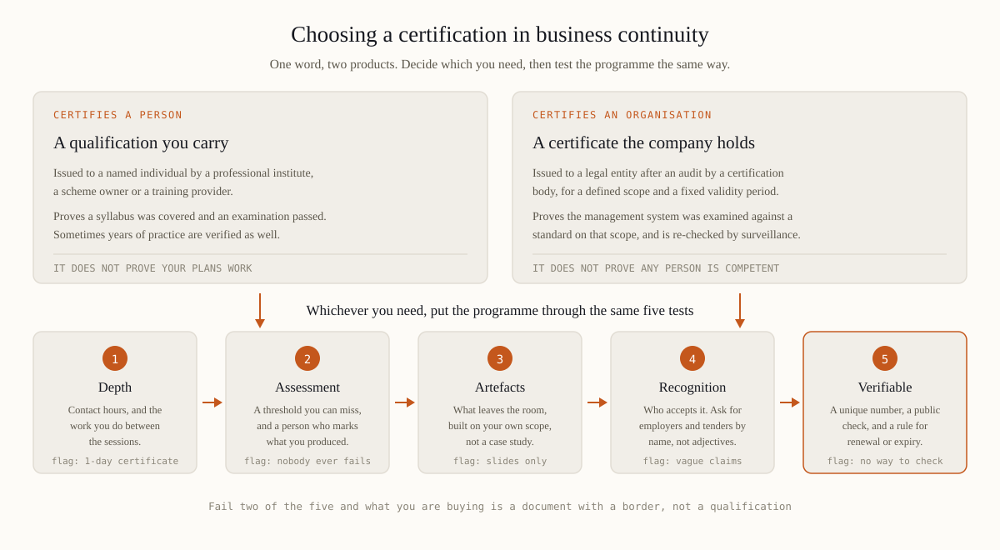

Business continuity certification in the Gulf: which one is worth having
One word covers two unrelated products. A person is certified when an examining body records that they passed something; an organisation is certified when an auditor confirms its system meets a standard on a defined scope. Choosing well begins with knowing which of the two you actually need.
The word covers two different things
In job adverts, tender packs and regulatory correspondence, "certified" can mean either of two things that have almost nothing to do with each other. A person becomes certified when a professional institute or a scheme owner examines them and records the result; the credential belongs to the individual and travels to the next employer. An organisation becomes certified when a certification body audits its management system against a standard, issues a certificate for a stated scope and then returns for surveillance audits until it expires. Neither implies the other. A company holding an ISO 22301 certificate may have nobody left in-house who could rebuild the system once the consultant's invoice is paid. A third object is confused with both: a maturity assessment, which produces a score and a roadmap and certifies nothing. When a requirement says "certification", read it once more and see whether it names a person or an entity — the answer changes everything you buy next.
What actually exists in this field
The market is smaller than it looks, and almost everything falls into five families.
Institute grades. The Business Continuity Institute and DRI International both run tiered routes: an entry examination against a published body of knowledge, then higher grades that require verified years of practice and referees. Slow, deliberately gated, and the closest thing the profession has to a common currency between employers.
Standard-based schemes. Lead Implementer and Lead Auditor courses built on ISO 22301, typically five days plus an examination, issued by scheme owners and by the training arms of certification bodies. Useful, with one caveat — a Lead Auditor course teaches auditing, which is a different trade from running a programme.
Regulator-linked training. In the UAE, competence in AE/SCNS/NCEMA 7000 is what most assessments actually probe. That is a national standard rather than a personal certification scheme, and choosing a course against it is a separate question covered in NCEMA 7000 training.
Academic and adjacent routes. Postgraduate certificates in risk or emergency management, plus cybersecurity and audit qualifications that contain continuity modules. Strong on theory, usually silent on the artefacts a regulator asks to see.
Provider programmes. Courses ending in a certificate issued by the trainer. Quality runs from excellent to worthless, which is precisely why the tests below exist.
What regulators and employers in the UAE and Saudi Arabia accept
Regulatory texts across the region are consistent on one point that most buyers miss: they require competent people and documented evidence of that competence, and they do not name a commercial credential. NCEMA's conformity work looks at the organisation's system, not at whose logo is on the trainer's slides. The central bank's operational resilience expectations in the UAE, and the business continuity framework the Saudi central bank sets for its licensed institutions, speak about accountable roles, testing and reporting. A certificate therefore never satisfies a compliance requirement by itself; it supports the competence record that does — a name, a date, a syllabus and a result, filed where internal audit will find it. Employers behave differently. Recruiters in Dubai, Abu Dhabi and Riyadh do filter CVs on named credentials, and institute letters after a name still open more doors than a provider certificate. The practical conclusion is unromantic: an institute grade buys you the labour market, applied training buys you the ability to do the work, and one purchase rarely does both jobs.

First decide which of the two you need. Then put any programme through the same five tests.
Five tests that separate a programme from a certificate
Depth. Count contact hours, then ask what happens between the sessions. A management system cannot be learned in six hours, and any offer of certification within a single day is selling attendance with a border around it.
Assessment. There must be a threshold a candidate can miss, and a human being who marks work rather than a multiple-choice engine alone. Ask what proportion of candidates fail; a scheme where nobody fails is a payment processor.
Artefacts. Ask what leaves the room. A business impact analysis on your own scope, recovery targets with the arithmetic visible, a plan skeleton with real names — these are what a programme is worth, and slides are not.
Recognition. "Internationally recognised" is an adjective, not evidence. Ask which employers, tender panels or authorities have accepted it, and request two examples you can check yourself. Where a body claims accreditation, verify it at the accreditor rather than on the provider's own page.
Verifiability. A credential needs a unique number, a public way to check it, and a renewal or expiry rule. If nobody can confirm in three years that the certificate is real, it is not a credential — it is a souvenir.
Questions to ask before you pay
Who owns the scheme, and is the person who teaches me also the person who examines me?
What does the certificate record — hours attended, or an assessment passed? The wording on the document matters more than the wording in the brochure.
What are the renewal obligations, and what happens if I miss them?
If the provider closes, how does anyone verify my credential afterwards?
Time, money and what you keep
Set expectations honestly before comparing prices. An entry-level institute examination takes most working professionals 40 to 60 hours of preparation; the senior grades are gated by verified experience and cannot be bought in a hurry at any price. A five-day standard-based course plus its examination consumes a week and returns a week's worth of knowledge. An applied programme that produces artefacts runs six to ten weeks of elapsed time for someone doing it alongside a full job, because the work between sessions is the point. Compare offers on cost per verifiable outcome rather than on the day rate, and count what remains afterwards: a number a third party can check, a competence record the audit file will accept, and documents the organisation is genuinely using. Our own ERGP programme sits in that applied family — six modules, an artefact from each, a capstone defended before an examiner, in Arabic as well as English — and it suits a manager who has to build and defend a system rather than someone whose main need is a line on a CV that recruitment software screens for.
How the money usually gets wasted
Buying the credential an advert names without checking whether the advert was copied from another market with different rules.
Taking a Lead Auditor course in order to build a programme, then discovering that auditing a system and creating one are separate skills.
Certifying the organisation before anybody inside it can maintain the system, which surfaces at the first surveillance audit rather than at the celebration.
Letting a credential lapse quietly because nobody tracked the renewal hours, and finding out during a tender submission.
A certificate is a claim about you or about your company. The only question that matters is whether someone else can check it, and whether the work behind it exists.
If the applied route is the one you need, ERGP is the first resilience governance certification fully available in Arabic, also in English. Six modules, six working artefacts, a capstone defended before an examiner and a verifiable certificate.